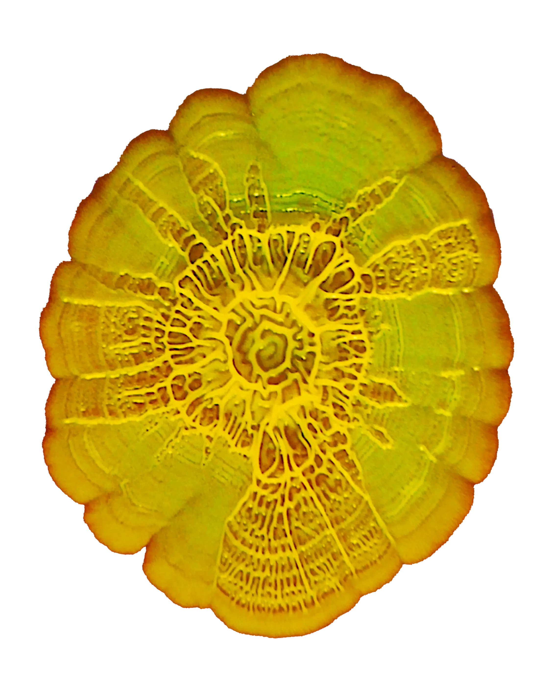
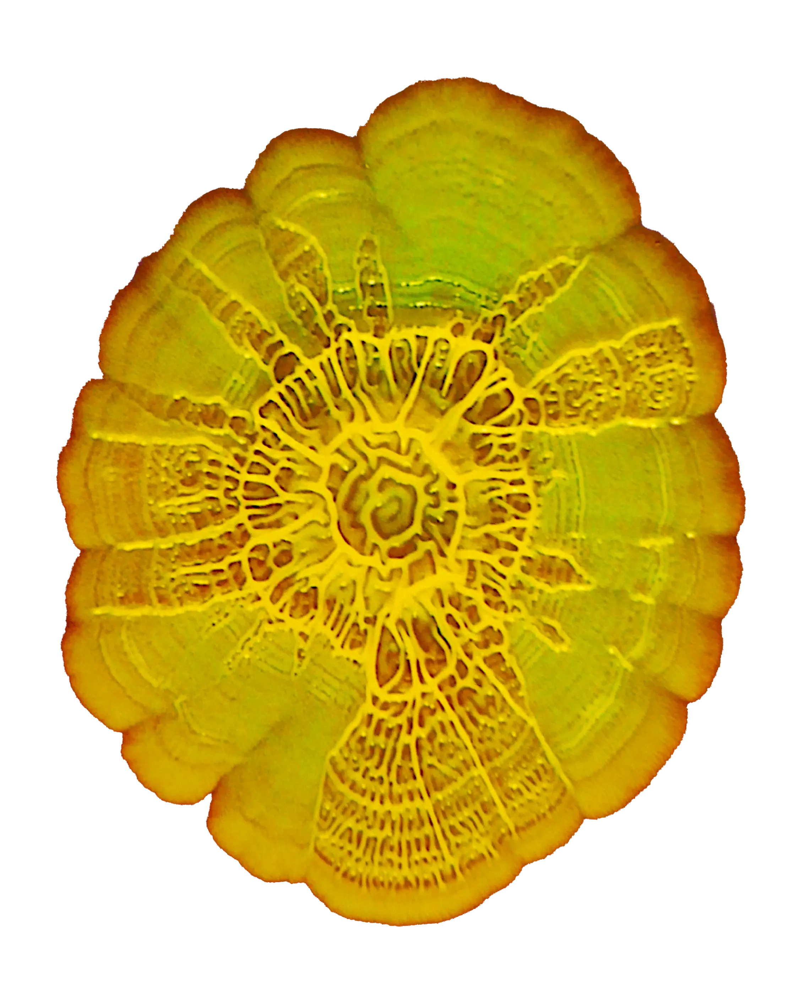

Woodblocks Festival is Kiosk Radio’s own festival, taking place on the first weekend of September (5-7/09) at Parc Royal’s Vauxhall, just a stone's throw away from the kiosk that has hosted the radio project since 2017.
For the third time, the Brussels community radio will transform the iconic open air theatre into a two-stage festival site, inviting an eclectic and diverse mix of both live acts and DJ’s, showcasing the different styles and subcultures that have shaped the radio’s community since day one.
True to the spirit of the station, Woodblocks proudly puts the spotlight on some of Brussels' most exciting emerging talent, alongside acclaimed artists from around the world.
Tickets are now available via Residents Advisor, starting at an accessible price of €10 (Friday), €22 (Saturday), €27 (Sunday) & €50 (Combi).
With the support of the City of Brussels, Brussels-Capital Region, visit.brussels, Creative Europe, Resident Advisor & Carhartt.
Two hundred metres north of Kiosk Radio lies Parc Royal’s best kept secret - Vauxhall. Titled after the namesake London pleasure gardens, this 18th century park resort includes an open air theatre, U-shaped gallery and neoclassical orchestra pavilion. A souvenir of the rich cultural past of the radio’s surroundings.
For the third time this year, Kiosk Radio teams up with local architecture collective Club Dérive to transform this hidden gem at Parc Royal into the Woodblocks Festival site with two stages. Their scaffolding structures offer a striking contrast to the festival's backdrop.
Two hundred metres north of Kiosk Radio lies Parc Royal’s best kept secret - Vauxhall. Titled after the namesake London pleasure gardens, this 18th century park resort includes an open air theatre, U-shaped gallery and neoclassical orchestra pavilion. A souvenir of the rich cultural past of the radio’s surroundings.
For the third time this year, Kiosk Radio teams up with local architecture collective Club Dérive to transform this hidden gem at Parc Royal into the Woodblocks Festival site with two stages. Their scaffolding structures offer a striking contrast to the festival's backdrop.